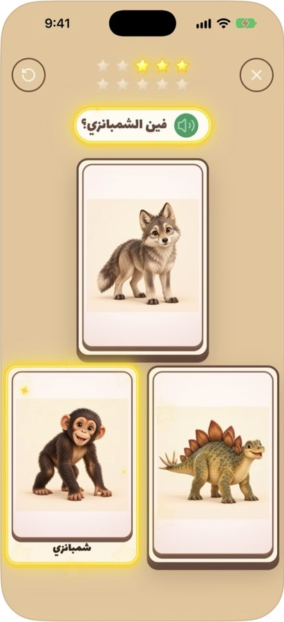

01
Listen
Hear a friendly Egyptian Arabic question. Tap the speaker to listen again.
How it works
A simple three-card game built around listening, recognizing, and discovering everyday Egyptian Arabic words.
Hear a friendly Egyptian Arabic question. Tap the speaker to listen again.
Find the right animal among three large illustrated cards. No reading required.
Enjoy warm voice encouragement and gentle gold feedback, then try another round.
Inside the experience
Yalla Masry also includes an animal gallery. Children can tap the pictures to hear names spoken in Egyptian Arabic, at their own pace.
The experience is easy to share with a parent or grandparent—listen together, point together, and practice words away from the screen.
